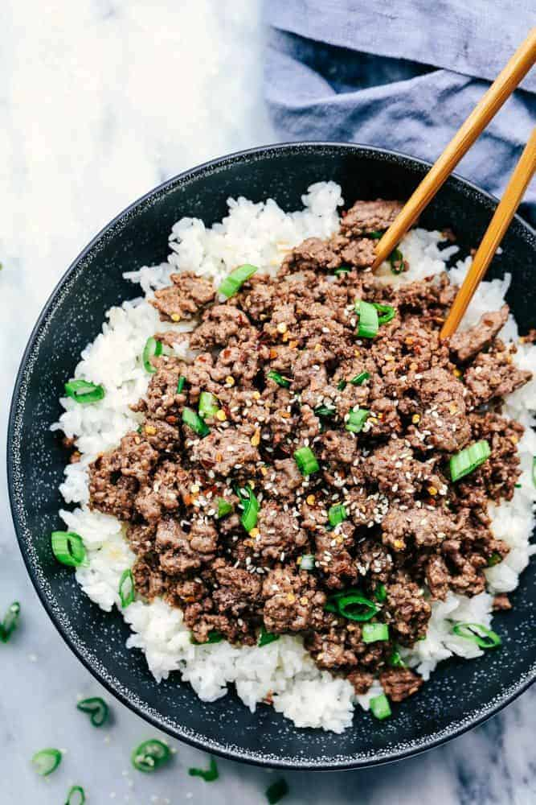

Korean Ground Beef Bowls

Home
Description
My old college roommate was the one who originally taught me about this recipe. It is super easy and
flavorful due to the ground beef sauce. The hardest part of the recipe is gathering the ingredients. This
recipe is so easy to meal prep, if that's something you are interested in. I would pair with white rice, I like
the sticky consistency of white rice compared to brown rice, but you can use whatever carb you prefer. I also
like to make airfried broccoli covered in the same sauce as the ground beef. I feel it makes the dish cohesive
but any vegetable will work if you like it. Overall, this dish is easy, yummy, and perfect for someone looking for
easy and healthy.
Ingredients
- 1 lb lean ground beef
- 4 garlic cloves minced
- 1/2 cup packed brown sugar
- 1/2 cup reduced sodium soy sauce
- 4 teaspoons sesame oil
- 1/2 teaspoon ground ginger powder
- 1/4 teaspoon crushed red pepper flakes or to your heart's desire
- 1/2 teaspoon black pepper
- 2 cupes hot cooked white or brown rice
- sliced green onions and sesame seeds for garnish
Steps
- In a small bowl, whisk the brown sugar, soy sauce, seasame oil, ginger, red pepper flakes, and ground pepper
together.
- Cook the ground beef and minced garlic in a large skillet over medium. Cook until the meat is no longer pink.
- Pour the sauce over the ground beef and let simmer for a few minutes.
- Serve over hot rice and garnish with green onions and sesame seeds. Add your veggie.
- Bon Apetite